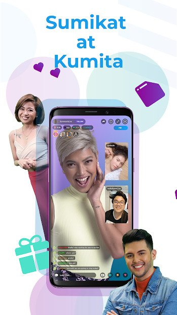

Kumu is a Filipino social media site where you can earn money by being a livestreamer, winning cash prizes by playing live games, and earning money by participating in Kumu's various promotions. You can also just hang out, check out the Kumunity's many livestreams, and meet and talk with other Filipinos. Kumumedia Technologies, Inc. owns and operates Kumu, a Filipino video sharing and e-commerce social networking site. It was established in 2017 and launched on Android and iOS devices. Kumu, derived from the word kumusta, emphasizes the Filipino importance of keeping in touch with one another no matter where they are in the world. It is aimed primarily at Filipinos living in or outside of the region. The application also introduces offline activities to its website, such as fan meetings with famous livestreamers and a convention called Kumu-Con that is based after Comic-Con, as well as extending beyond livestreaming to e-commerce and payments.
 Social media live streaming isn't a strange idea. It's provided by big names like Facebook, YouTube, and Instagram, and there are also sites dedicated to it, such as Twitch. And, since they're tools that are mostly unfiltered and available to the public, both material and viewer reviews are bound to be hit-or-miss: stories and comments vary from mostly positive to outright offensive. Kumu, on the other hand, is a safe space where you can share a piece of yourself while keeping it light and interactive.
KUMU build an atmosphere that encourages you to be the best and truest version of yourself by providing entertaining and authentic content. KUMU's livestream feature allows members of the Kumunity to show off whatever they want. You can stream everything from life coaching to health to art to education.
If you create a content for Kumu, you can benefit from Kumunity "gifts." You'll get more virtual gifts as your audience grows and engages with you and this gifts can then be exchanged for money.
KUMU got your back as long as you're a member of their team. Every month, they hold competitions in which all live streamers can improve their online presence and win prizes such as being featured on billboards or advertisements. You might also win fantastic prizes like gadgets and trips from them.
Streamers do a variety of things on their shows. Some produce “talk shows” with guests or other streamers, while others perform original music or do tutorials on a specific subject. When there are no limitations on what you can stream, certain platforms would still impose their restrictions.That is why content creators are constantly pushed to come up with something different, exclusive, and never-before-seen. Staying fresh and relevant is important, but it won't guarantee your live stream career's sustainability.
Consistency is essential for attracting and maintaining an audience, just as it is in any other relationship. Creating a schedule so that audiences know when to tune in would be greatly useful. And, of course, you must provide them with a reason to return.
Connecting with other streamers is another significant aspect. Many of the shows on Kumu are put on by a group of streamers who use the app; they host full-fledged awards shows, game shows, pageants, and other events. Connecting with other streamers and collaborating on shows is one way to start a conversation, learn from others, broaden your audience, and keep up to date.
2020 * 5-minute read
It seemed to happen slowly, then all at once, the way Kumu’s blue tarsier mascot started popping up all over the internet, this once tiny app opening its arms to a hungry global audience.
Read More2020 * 3-minute read
How to making money with bigo live app is probably the most blooming and trending way of earning money.
Read MoreVideo Courtesy: Kumu - Pinoy Livestream Community Gameshows
https://youtu.be/ar2UNIflKiY
We create this content for general information purposes and all the information is base on our understanding and researches and it should not taken as advice. Always take professional advice.
Disclaimer: Note that we do not own the images and videos used in this website. All rights and credit goes directly to its rightful owners. This website is non-profit and made for educational purposes only. No copyright infringement intended.
"Copyright Disclaimer, Under Section 107 of the Copyright Act 1976, allowance is made for "fair use" for purposes such as criticism, comment, news reporting, teaching, scholarship, and research. Fair use is a use permitted by copyright statute that might
otherwise be infringing. Non-profit, educational or personal use tips the balance in favor of fair use"